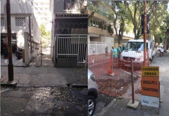
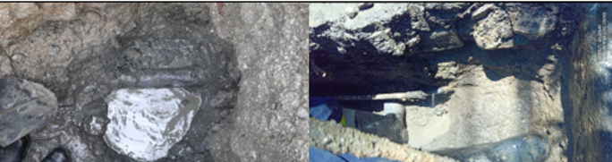
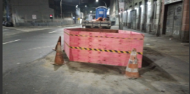

Nesta Ordem de Serviço, será realizado um reparo de rede de água. Este serviço é de extrema importância para
redução de perdas da companhia e regularização do abastecimento da população que pode ser afetado por conta
de vazamentos. Siga rigorosamente as boas práticas e orientações descritas neste guia para garantir a
correta execução do serviço.
Deslocamento – Field Service: A equipe deve ativar a rota no sistema e se deslocar até
o local indicado na Ordem de Serviço, conferindo se a georreferencia informada corresponde ao endereço
físico do ponto de intervenção.
Início – Chegada ao Local: Chegada ao Local: Ao chegar ao local da ocorrência, a equipe deverá identificar com precisão o ponto de vazamento onde será realizada a intervenção.
Preparação do Local: A equipe deverá delimitar a área onde será realizada a intervenção, utilizando cones, fitas zebradas e, quando necessário, barreiras físicas, garantindo o isolamento da área e a segurança operacional.
Início – Chegada ao Local: Chegada ao Local: Ao chegar ao local da ocorrência, a equipe deverá identificar com precisão o ponto de vazamento onde será realizada a intervenção.
Preparação do Local: A equipe deverá delimitar a área onde será realizada a intervenção, utilizando cones, fitas zebradas e, quando necessário, barreiras físicas, garantindo o isolamento da área e a segurança operacional.
Execução do Reparo: Durante o reparo da rede, verifique se há anomalias como umidade,
vazamentos ou fissuras. Caso alguma dessas situações seja identificada, execute o reparo necessário no
trecho afetado.
Reparo de conexões: Quando o vazamento estiver no colar de tomada ou em outro ponto de conexão, retire a peça danificada e instale uma nova peça adequada. Garanta a vedação correta e que não haja vazamentos.
Reparo de tubulação: Quando o vazamento estiver no corpo do tubo, causado por fissuras ou pontos de vazamento, realize o reparo utilizando luva mecânica, bipartida ou tripartida, conforme a situação encontrada, garantindo a estanqueidade da rede.
Substituição da rede: Substitua todo o trecho da tubulação quando houver sinais de degradação, descoloração ou obstrução superior a 10%. Remova o trecho danificado, limpe os pontos de conexão, corte e instale o novo tubo com as conexões adequadas. Após a instalação, verifique se há vazamentos. Quando o trecho substituído for igual ou maior que 6 metros, troque o serviço para o código “122002 - SUBSTITUIÇÃO DE REDE DE AGUA”.
Reparo de conexões: Quando o vazamento estiver no colar de tomada ou em outro ponto de conexão, retire a peça danificada e instale uma nova peça adequada. Garanta a vedação correta e que não haja vazamentos.
Reparo de tubulação: Quando o vazamento estiver no corpo do tubo, causado por fissuras ou pontos de vazamento, realize o reparo utilizando luva mecânica, bipartida ou tripartida, conforme a situação encontrada, garantindo a estanqueidade da rede.
Substituição da rede: Substitua todo o trecho da tubulação quando houver sinais de degradação, descoloração ou obstrução superior a 10%. Remova o trecho danificado, limpe os pontos de conexão, corte e instale o novo tubo com as conexões adequadas. Após a instalação, verifique se há vazamentos. Quando o trecho substituído for igual ou maior que 6 metros, troque o serviço para o código “122002 - SUBSTITUIÇÃO DE REDE DE AGUA”.
Sua equipe deverá realizar a sondagem do local, com escavação inicial em dimensões aproximadas de 0,60 m
x 0,60 m até a localização da rede e do possível ponto de vazamento, registrando a atividade como
desdobro de Sondagem no campo de Adicional Executado
Verifique o tipo de serviço executado e se corresponde ao código de Reparo de Rede de Agua
Trocar o cód do serviço para "Sondagem de Rede de
Água".
Trocar o cód do serviço para "Reparo de Ramal".
Trocar cód do serviço para "Substituição de Rede
de Água".
Seguir com o Preenchimento do Formulário
Encerrar OS como EXOC a repassar ao setor
responsável
A seguir, são apresentadas as boas práticas para o correto preenchimento do formulário.
“Qual o diâmetro da rede?”: Selecionar corretamente o diâmetro da tubulação
reparada;
“Material da Rede”: Informar o material correspondente à rede;
“Localização da Rede?”: Selecionar a posição e direção em que rede está localizada;
“Qual a profundidade da Rede?”: Informe a profundidade em que a rede reparada está. Essa medida pode ser verificada com a fita métrica utilizada no cálculo da vala durante o reaterro, quando disponível.
“Quantos Metros de Rede a Equipe Substituiu?”: Preencha apenas quando houver substituição de trecho de rede. Em reparos de conexões ou uso de luvas mecânicas, bipartidas ou tripartidas, informe zero.
“Material da Rede”: Informar o material correspondente à rede;
“Localização da Rede?”: Selecionar a posição e direção em que rede está localizada;
“Qual a profundidade da Rede?”: Informe a profundidade em que a rede reparada está. Essa medida pode ser verificada com a fita métrica utilizada no cálculo da vala durante o reaterro, quando disponível.
“Quantos Metros de Rede a Equipe Substituiu?”: Preencha apenas quando houver substituição de trecho de rede. Em reparos de conexões ou uso de luvas mecânicas, bipartidas ou tripartidas, informe zero.
Recomposição de pavimento posterior necessária?
"Qual o número de valas?": Informe a quantidade de valas que foram feitas, caso possua
mais de uma vala você deverá preencher as informação correspondente.
"Comprimento da Primeira da vala (M): Após aferição, informar o comprimento da vala.
"Largura da Primeira da vala (M)": Após aferição, informar a largura da vala.
"Metragem da Primeira Vala": Valor calculado automaticamente (Largura X Comprimento)
"Metragem Total de Todas as valas": Valor Calculado automaticamente (Vala1+ Vala2+Vala3)
"Comprimento da Primeira da vala (M): Após aferição, informar o comprimento da vala.
"Largura da Primeira da vala (M)": Após aferição, informar a largura da vala.
"Metragem da Primeira Vala": Valor calculado automaticamente (Largura X Comprimento)
"Metragem Total de Todas as valas": Valor Calculado automaticamente (Vala1+ Vala2+Vala3)
Selecionar a opção e seguir com a finalização
da OS
A seguir apresentamos o padrão de fotos que deve ser seguido na execução do serviço de Reparo de
Rede de Agua.
Necessário para confirmar que o local está adequado para a execução do serviço.

Necessária para registrar como o local foi encontrado antes da execução.

Deve evidenciar o serviço concluído e o método utilizado pela equipe.

Deve evidenciar as medições da tubulação, quando houver substituição, além da profundidade e da vala
devidamente recortada, caso a equipe seja responsável pelo reaterro.

Necessária para confirmar a execução do serviço e o padrão de limpeza do local.

Abrir desdobro de "Reaterro de Valas"
Finalizar o Serviço
Abrir o desdobro de "Repavimentação Calçada"
Abrir o desdobro de "Repavimentação Concreto"
Abrir o desdobro de "Repavimentação
Asfáltica"
Abrir desdobro de "Reaterro de Valas"